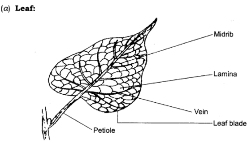
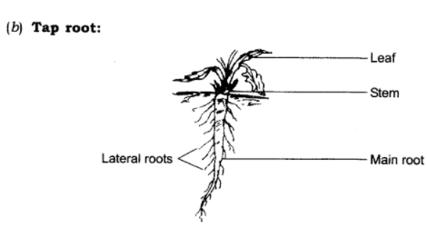
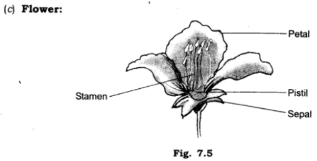

all ex and ques/ans is avlable in wedsite of ncert
1. Correct the following statements and rewrite them in your notebook.
(a) Stem absorbs water and minerals from the soil.
(b) Leaves hold the plant upright.
(c) Roots conduct water to the leaves.
(d) The number of sepals and petals in a flower is always equal.
(e) If the sepals of a flower are joined together, its petals are also joined together,
(f) If the petals of a flower are joined together, then the pistil is joined to the petal.
Ans:
(a) Roots absorb water and minerals from the soil.
(b) Roots hold the plant upright.
(c) Stem conducts water to the leaves.
(d) The number of petals and sepals in a flower is usually equal.
(e) If the sepals of a flower are joined together, its petals are not necessarily joined together.
(f) If the petals of a flower are joined together, then the pistil is not necessarily joined to the petal.
2. Draw (a) a leaf, (b) a tap root and (c) a flower, you have studied for Table 7.3 of the textbook.
Ans:



3. Can you find a plant in your house or in your neighbourhood which has a long but a weak stem? Write its name. In which category would you classify it?
Ans: Yes, we find a money plant in our house. It is a climber.
4. What is the function of a stem in a plant?
Ans: A stem performs following functions:
(i) The stem and its branches hold leaves to get maximum sunlight.
(ii) It transports water from roots to different parts of the plant.
(iii) It transports food from leaves to different parts of the plant.
(iv) It bears leaves, flowers and fruits.
5. Which of the following leaves have reticulate venation?
Wheat, tulsi, maize, grass, coriander (dhania), china rose.
Ans: Tulsi, china rose.
6. If a plant has fibrous root, what type of venation are its leaves likely to have?
Ans: Parallel venation.
7. If a plant has leaves with reticulate venation, what kind of roots will it have?
Ans:Tap root.
8. Is it possible for you to recognise the leaves without seeing them? How?
Ans: We cannot exactly recognise the leaves without seeing them. We may be able to have some idea by touching and smelling them.
9. Write the names of the parts of a flower in sequence, from outside to inside.
Ans: The names of various parts of a flower from outside to inside are:
(i) Sepals
(ii) Petalsv
(iii) Stamens
(iv) Pistil
10. Which of the following plants have you seen? Of those that you have seen, which one have flowers?
ANS: Grass, maize, wheat, chilli, tomato, tulsi, pipal, shisham, banyan, mango, jamun, guava, pomegranate, papaya, banana, lemon, sugarcane, potato, groundnut
11. Name the part of the plant which produces its food. Name this process
Ans: Leaves produce food for the plant. This process is called photosynthesis.
12. In which part of a flower you are likely to find the ovary?
Ans: We find ovary in pistil. It is the lowermost part of the pistil.
13. Name two flowers, each with joined and separates sepals.
Ans:
Flowers with joined sepals:
(i) Datura
(ii) Loki
Flowers with separate sepals:
(i) Gurhal
(ii) Mustard